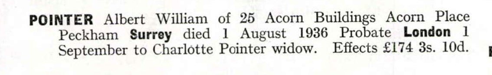
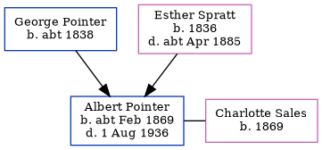

Albert William Pointer cFeb 1869 - 1936
[ Home ] | [ Calendar ] | [ Surnames Index ] | [ Errors ] | [ Family History ]A carbonizing foreman and the child of George Pointer (a house carpenter) and Esther Spratt, Albert Pointer, the first cousin three-times-removed on the father's side of Nigel Horne, was born in St Peters, Thanet, Kent, England c. Feb 18691,2. He married Charlotte Sales in Lewisham, London, England around Feb 18914.
During his life, he was living at Station Road, Birchington, Kent, England on 3 Apr 18815; at Offley Road, Lambeth, London on 31 Mar 19017; at Blackfriars Road, Southwark, London on 2 Apr 19116; and at 25 Acorn Buildings, Acorn Place, Peckham, London in 1936.
He died on 1 Aug 1936 in Camberwell, London, England2,3.
Parents
- George was born c. 1838
- Esther was born in 1836
Citations
- England & Wales births 1837-2006 - Findmypast
- England & Wales deaths 1837-2007 - Findmypast
- England & Wales Government Probate Death Index 1858-2019 - Findmypast
- England & Wales Marriages 1837-2005 - Findmypast
- 1881 England, Wales & Scotland Census - Findmypast (was age 12 and the son of the head of the household)
- 1911 Census for England & Wales - Findmypast (was age 42 and the head of the household)
- 1901 England, Wales & Scotland Census - Findmypast (was age 32 and the head of the household)
Media
Albert William Pointer - Probate

England & Wales births 1837-2006 - BMD/B/1869/1/AZ/000564/021
1901 England, Wales & Scotland Census - GBC/1901/0004362467
1911 Census for England & Wales - GBC/1911/RG14/01782/0017/1
England & Wales marriages 1837-2008 - BMD/M/1891/1/AZ/000218/131
England & Wales deaths 1837-2007 - BMD/D/1936/3/AZ/000652/063
1881 England, Wales & Scotland Census - GBC/1881/0004822325
England & Wales Government Probate Death Index 1858-2019 - GBOR/GOVPROBATE/C/1936-1936/00099804
Family Tree
Map
Generated by ged2site. Last updated on Jul 3, 2024
Known Issues
Residence record for 1936 contains no citation
Listed in the residence for 1936, but spouse Charlotte Sales is not
Census information missing between Census UK 1881 and Census UK 1901